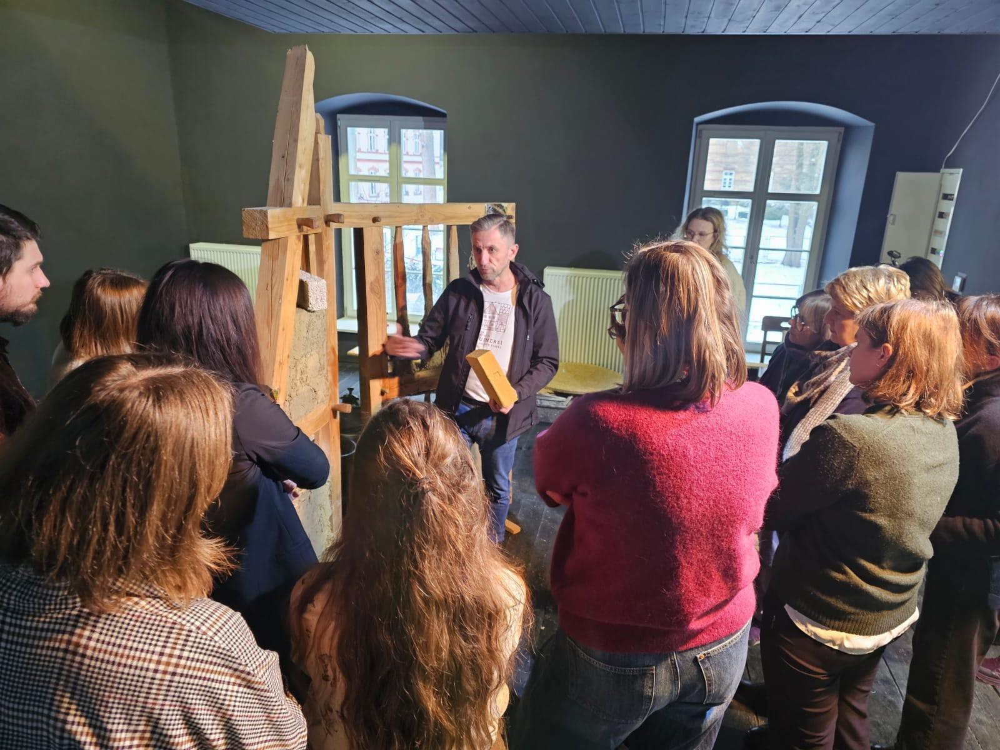
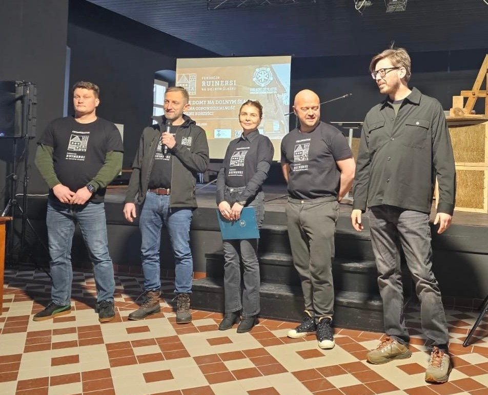

Startseite/Galerie
Galerie
So sieht Ruinersi hinter den Kulissen aus: Workshops, Treffen, Gespräche, alte Häuser und vor allem Menschen — denn ohne sie würde all das nicht passieren. Wir haben Bilder von Orten gesammelt, die wir besucht haben, und von Dingen, die wir gemeinsam geschaffen haben.
Vier Perspektiven

Bildung und Workshops
Wissen, das praktisch vermittelt wird.

Veranstaltungen und Ruinersi-Treffen
Treffen, Konferenzen und Community-Veranstaltungen.

Zusammenarbeit und Dialog
Kommunen, Institutionen, Partner und Cluster.

Menschen und Community
Ruinersi von innen — die Menschen, die diese Community ausmachen.

Wir treffen uns im echten Leben
Ruinersi-Treffen, Konferenzen, Ruinersi-Zonen und weitere Veranstaltungen, bei denen Wissen und Online-Community in die reale Welt kommen.


An einem Tisch
Treffen mit Kommunen, Denkmalpflegern, öffentlichen Institutionen, zivilgesellschaftlichen Organisationen und Clusterpartnern.